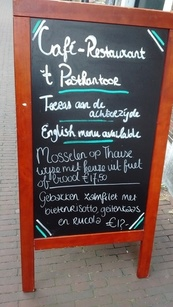

پیادهروی در دلفت-ده آگوست دوهزار و پانزده

از این تختهسیاهها کنار همه کافهها و رستورانها هست. با خط نستعلیق انگلیسی غذای روز -یعنی ارزانترین غذای روز- را مینویسند روی تابلو. غذای دومی بد نیست. فیله ماهی سالمون، با ریزوتوی چغندر (که اگر مریم خواب نبود ازش میپرسیدم و بعد اینجا طوری مینوشتم یعنی که میدانم چیست) با پنیر بُز (که مریم میگوید از بُز رندهشده تولید میشود) و راکولا (یک نوع سبزی تند). ماهی سالمون در کنار پیتزا و فسنجان و کباب کوبیده و قیمهبادمجان و تهچین مرغ و کلمپلوی شیرازی و آلبالوپلو با ماهیچه از خوراکهای بهشتی است. اگر غذای دیگری یادم آمد در آیات بعدی ذکر خواهد شد.